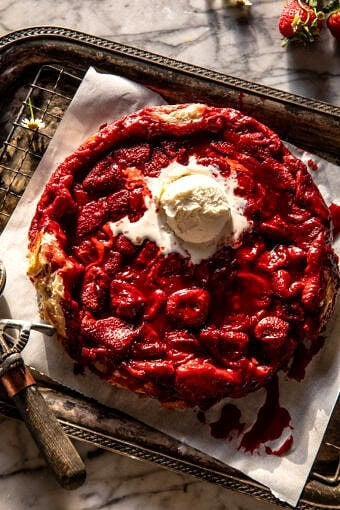
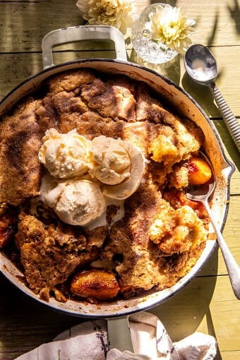
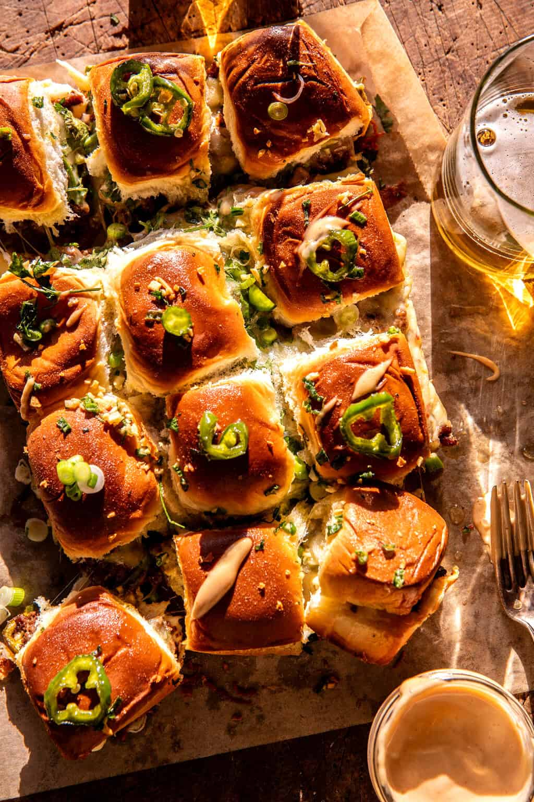
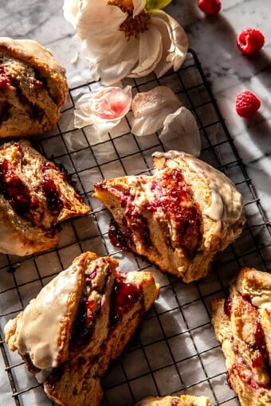

ALL RECIPES
Fresh Gluten Free Berry Pie
Ingredients
- 1 gluten free pie crust blind baked and cooled
- 3 pounds (1.3kg) mixed fresh berries, rinsed and stemmed
- ¾ cup (150g) granulated sugar
- 3 tbsp (23g) cornstarch
- ½ cup (120ml) water
- 1 3-oz (85g) package strawberry Jello mix
- 1 teaspoon vanilla extract
- ⅛-¼ teaspoon rose water
- sweetened whipped cream for serving
- Blind bake pie crust per recipe instructions and allow to cool completely.
- Place all but roughly one cup of berries in a large bowl and set aside. Puree the one cup of berries in a food processor until smooth.
- In a small saucepan, whisk together granulated sugar and cornstarch. Add water and berry puree and whisk constantly over medium heat until bubbling. Continue cooking, whisking all along, for 3 minutes.
- Remove from heat and whisk in dry strawberry Jello mix, vanilla, and rose water (if using). Pour over berries and toss to coat all berries.
- Scoop coated berries into cooled pie shell. Refrigerate for at least 2 hours, but up to overnight.
- To serve, whip 2 cups (480ml) of heavy cream with ¼ cup (32g) powdered sugar and 2 teaspoon of vanilla extract to stiff peaks. Dollop spoonfuls on top of each slice and serve.

Gluten Free Peach Crumble Pie
Ingredients
- ½ recipe (one single crust) Best Ever Gluten Free Pie Crust
- 6-7 medium fresh peaches, peeled and cut into chunk
- ½ cup (60g) tapioca starch
- ½ cup (100g) lightly packed brown sugar
- ½ teaspoon cinnamon
- ¼ teaspoon nutmeg, optional
- ¼ teaspoon kosher salt
- ¾ cup (105g) Kim's gluten free flour blend
- ½ cup (100g) lightly packed brown sugar
- 1 teaspoon ground cinnamon
- 5 tbsp (71g) butter, softened
- In a medium bowl, mix together all topping ingredients with a fork until large crumbs form. Refrigerate until firm (while making the rest of the pie).
- Make the pie crust according to recipe instructions. Roll out and transfer to a pie plate. Refrigerate for 15-20 minutes until firm.
- Preheat oven to 425°F. Remove pie crust from fridge and prick all over with fork (sides and bottom). Line with a crumpled up piece of parchment paper and fill with pie weights (store-bought pie weights, dry beans, rice, or sugar). Bake for 12-15 minutes, or until edges are light golden brown. Carefully remove the parchment and pie weights and return the pie crust to the oven to continue to bake for an additional 2-3 minutes, just until the crust is set and no longer shiny. Cool completely. Reduce oven temperature to 375°F.
- Peel and chop peaches into one-inch chunks. Place in a large bowl and add brown sugar, tapioca starch, cinnamon, nutmeg (if using), and salt. Toss to coat completely.
- Pour peach filling into prepared and cooled pie crust. Scatter crumbs over the top of the peaches, breaking up any super large chunks with your fingers.
- Slide pie onto a large baking sheet to catch any drips and bake for 45-50 minutes.Remove from oven, let cool completely on wire rack, and serve.

Gluten Free Brioche Buns
Ingredients
- 240 grams whole milk
- 100 grams granulated sugar
- 12 grams instant yeast
- 5 grams whole psyllium husks
- 1 large egg, at room temperature
- 6 large egg yolks, at room temperature
- 85 grams butter, softened
- 245 grams Kim's gluten free bread flour blend
- 5 grams baking powder
- 3 grams kosher salt
- 1 large egg mixed with 1 tablespoon milk or water
- 14 grams butter, melted
- sesame seeds or poppy seeds, optional
- Add all of the ingredients, except for the egg wash, butter, and seeds into the bowl of a stand mixer in the order in which they are listed. Using the dough hook, mix on medium-high speed for 5 minutes. Scrape into the middle of the bowl, cover, and refrigerate at least six hours.
- Remove the cold dough from the refrigerator and knead it on a well-floured surface until smooth (the dough is on the stickier side, so it's okay to use extra flour). Divide dough into 2.5-3 ounce pieces (70-85 grams) and shape into round or hot dog buns.
- For round buns, place about 2 inches apart on parchment-lined baking sheet. For soft-sided (tear apart) hot dog buns, place about ½-inch apart on parchment-lined baking sheet. They will rise into each other and be soft on the sides. Cover the buns loosely with plastic wrap and allow to rise until nearly doubled in size, 30-45 minutes.
- Preheat the oven to 350°F. When buns have finished proofing, brush them with an egg wash and, if desired, sprinkle them with seeds or kosher salt. Bake for 18-20 minutes, or until golden brown and puffed.
- While still warm, brush with melted butter. Serve warm or at room temperature.

Gluten Free Chocolate Chunk Cookie Cakes
Ingredients
- 2 cups (280g) Kim's all purpose gluten free flour blend
- 1 teaspoon baking powder
- ¼ teaspoon salt
- 1 cup (2 sticks or 226g) butter, at room temperature
- 1 cup (200g) tightly packed light brown sugar
- ¾ cup (150g) granulated sugar
- 3 large eggs, at room temperature
- ¾ cup (180g) sour cream, at room temperature
- 1 tablespoon pure vanilla extract
- 12 ounces (340g) semi-sweet chocolate, chopped into small chunks
- Preheat oven to 350° F. Butter and flour mini loaf pans and set aside.
- In a small bowl, measure or weigh flour, baking powder, and salt. Whisk until combined and set aside.
- Place butter, brown sugar, and granulated sugar in the bowl of an electric mixer fitted with paddle attachment. Mix until light and fluffy.
- Add 3 eggs, one at a time, beating for about 30 seconds after each addition. Scrape down sides of bowl and beat for an additional 2 minutes on medium high speed.
- Turn the mixer down to low and slowly beat in the flour mixture, followed by the sour cream. Add the vanilla and beat on low until just combined. Fold in the chocolate chunks.
- Using two large spoons portion batter into each loaf pan, filling each ¾ full to all the way. Level with an offset spatula.
- Bake for about 26-28 minutes, or until cakes spring back when lightly touched. Remove cakes from oven and allow to cool in pan 10 minutes before removing to a wire rack to cool completely.
